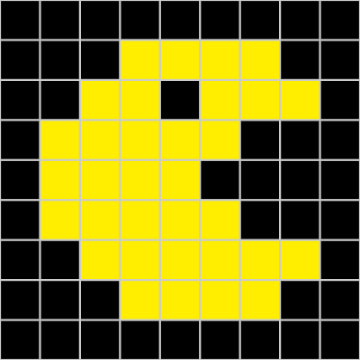
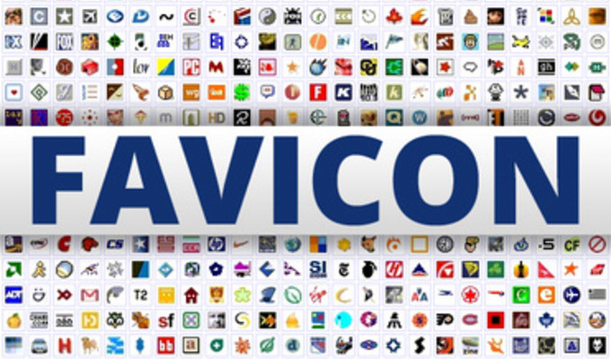

CUNY/QCC
Software Engineer-Micro Credential
Bootcamp
Lab6
01/08/2021
Omar Barragan

What exactly is a favicon?
A favicon is an icon image that represents a website also short for favorite icon. It is an icon associated with any website located next to the site's name or in the address bar of any browser. A great indicator in helping anyone find a page when multiple tabs are open. Of course because of their size they work best next to few words. A repressentation/theme of a website, great way of recognizing a website at glance.

<--- Some known favicons everyone
is familiar with.
How are favicons created?
Favicons have been around for quite some time, the very first introduction of a favicon was in March 1999. Microsoft introduce it with the released of Internet Explorer 5, a battle with Nestcape as a competitor. A move made possible by developer at Microsoft Bharat Shyam, adding the icon to each website on the favorite list. Furthermore, the name derived from the word "favorite" + "icon" = "favicon". Favicons were started off by the ".ico." extention and transformed into " link rel=”icon” href=”/path/to/icon.png” ", making it easier for developers to showcase and find the icon path.
How did I create the favicon for this site?
Depending on the type of favicon you may want to create,
it may not be too difficult. Of course, if you are ery artistic or have the time, the outcome can be very
creative. My pixel creation is 9 x 9 pixels in size. It is a version of Pac Man. Colors are done using the
bianry code using a 12 bit- scheme.
Below is the binary code used to create the favicon in exact size:
0000 1001
0000 1001
0000 1100
000000000000 000000000000 000000000000 000000000000 000000000000 000000000000 000000000000 000000000000 000000000000
000000000000 000000000000 000000000000 111111100000 111111100000 111111100000 111111100000 000000000000 000000000000
000000000000 000000000000 111111100000 111111100000 000000000000 111111100000 111111100000 111111100000 000000000000
000000000000 111111100000 111111100000 111111100000 111111100000 111111100000 000000000000 000000000000 000000000000
000000000000 111111100000 111111100000 111111100000 111111100000 000000000000 000000000000 000000000000 000000000000
000000000000 111111100000 111111100000 111111100000 111111100000 111111100000 000000000000 000000000000 000000000000
000000000000 000000000000 111111100000 111111100000 111111100000 111111100000 111111100000 111111100000 000000000000
000000000000 000000000000 000000000000 111111100000 111111100000 111111100000 111111100000 000000000000 000000000000
000000000000 000000000000 000000000000 000000000000 000000000000 000000000000 000000000000 000000000000 000000000000